UNIDAD II
DESARROLLO BACKEND CON EL FRAMEWORK DEL LADO DEL SERVIDOR Y BASE DE DATOS
Este cómputo estudiamos php, estuvimos aprendiendo sobre Laravel y las variadas tecnologías
que se pueden implementar dentro de este bonito framework, y digo bonito porque agiliza bastante
el desarrollo y nos permite ver grandes resultados en muy poco tiempo sobre todo con la variedad
de paquetes que han surgido, esto lo hace mucho más atractivo en comparación a lo que era en sus inicios,
bueno, yo no lo usé antes, pero ya me lo puedo imaginar como era al no tener estas joyas(frameworks y paquetes).
Laravel tiene a su disposición muy buenos paquetes o tecnologías como el paquete de laravel/ui
que es una manera sencilla de crear un sistema de autenticación y es útil para implementar en aplicaciones
pequeñas y que no tengan una mayor robustez. Es un paquete excelente porque nos brinda una base sobre
la cual iniciar a trabajar y nos ahorra tiempo, además que contiene los archivos bastante
simplificados, permitiéndonos incorporar solo los archivos que requiramos; por otro lado
el hecho que permita el uso de Bootstrap desde su instalación parece ser un punto más
a favor, dado que es el recurso de front-end más usado o al que más estamos
acostumbrados, otro muy bueno es Laravel Jetstream que también es super
genial, tomando en cuenta que es mas robusto y tiene mas funcionalidades, como la autenticacion de dos factores
el registro de usuarios en tiempo real, etc. Sin embargo este al usar el
motor de platillas blade, usa por defecto tailwind, y esto no es muy amigable para quienes
estamos acostumbrados a usar Bootstrap, sin embargo es un buen momento para aprender sobre tailwind,
no negaré que tiene sus bondades.
Otro punto que considero relevante en este cómputo fue el aprender sobre las API y middlewares, conexión
a bases de datos, tecnologías que no pueden faltar en el desarrollo de aplicaciones, independientemente de
la plataforma.
Estuvo super genial, me gustó bastante la variedad de contenidos que vimos este cómputo.
EVIDENCIA DE ENTREGAS
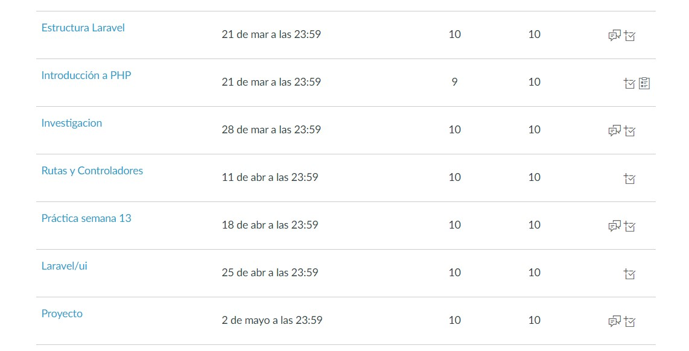
TAREAS Y PRACTICAS
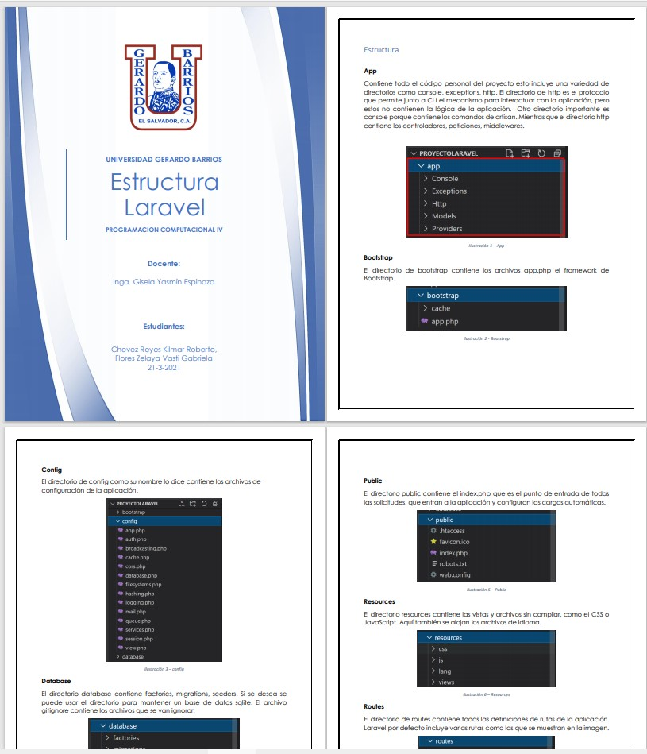
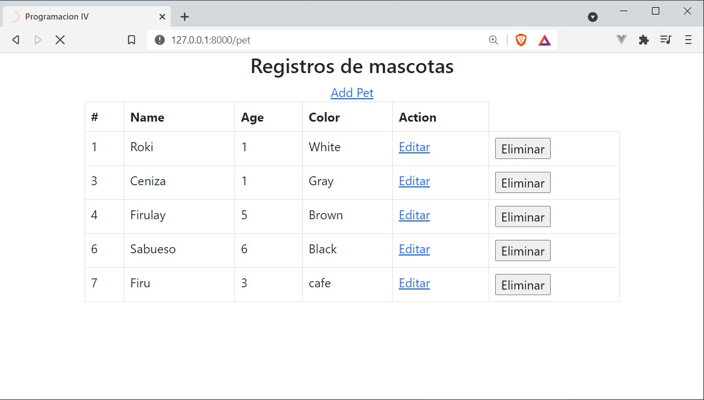
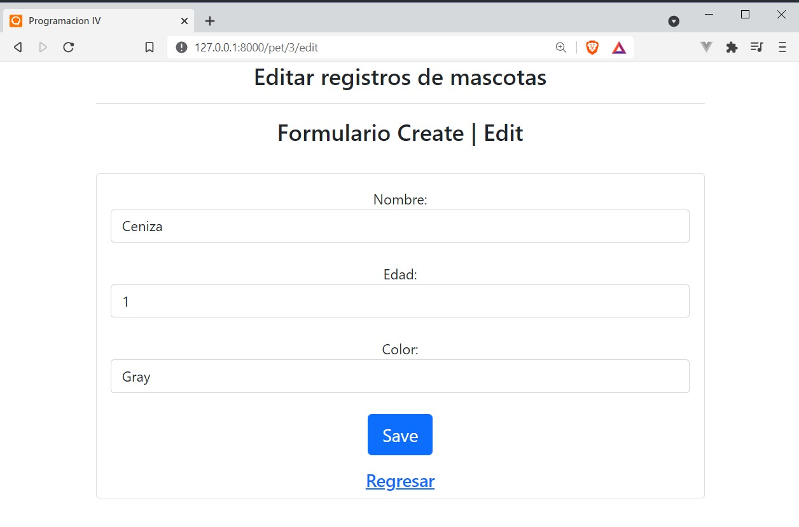
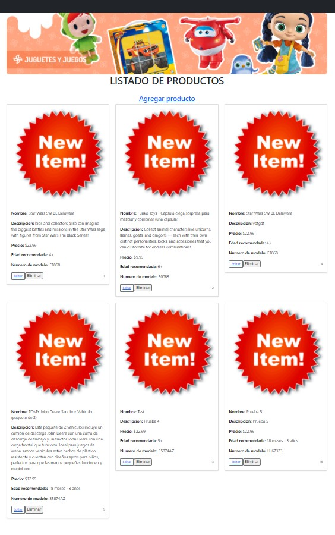
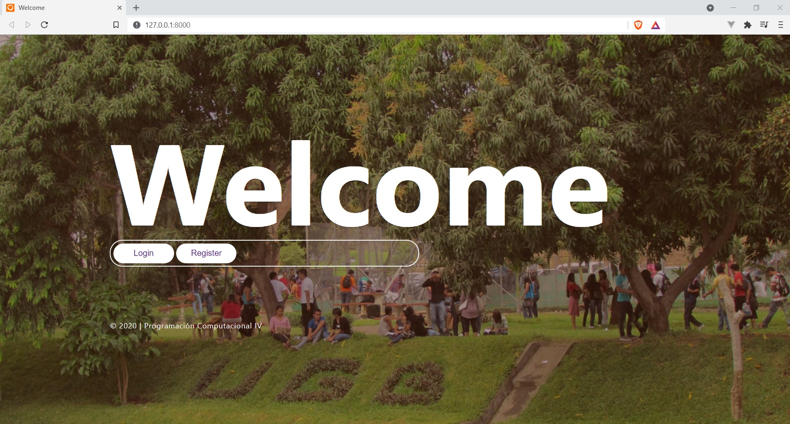
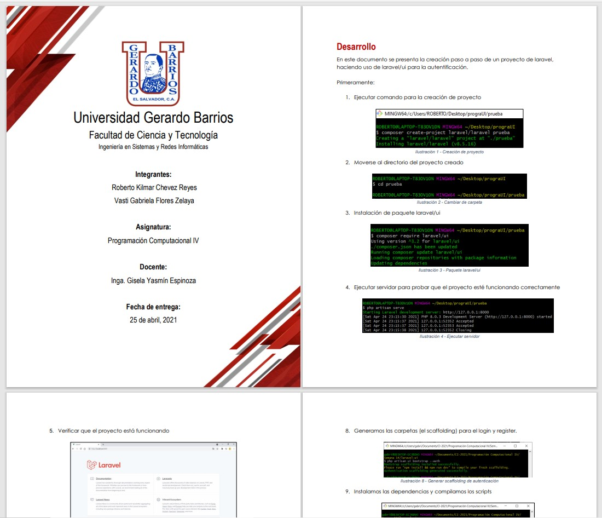
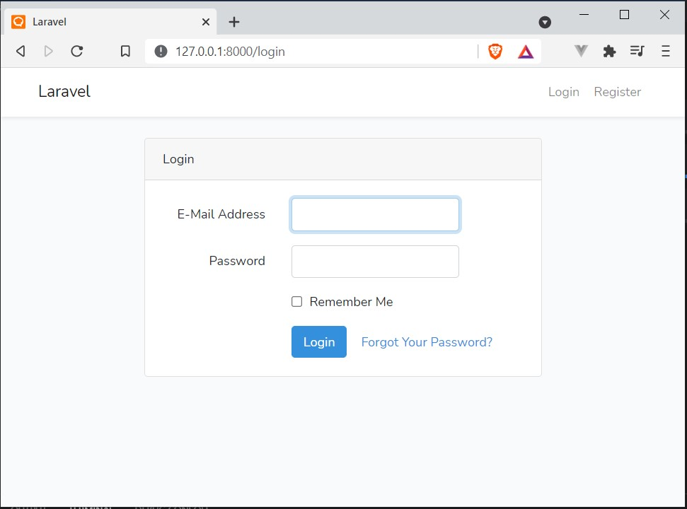 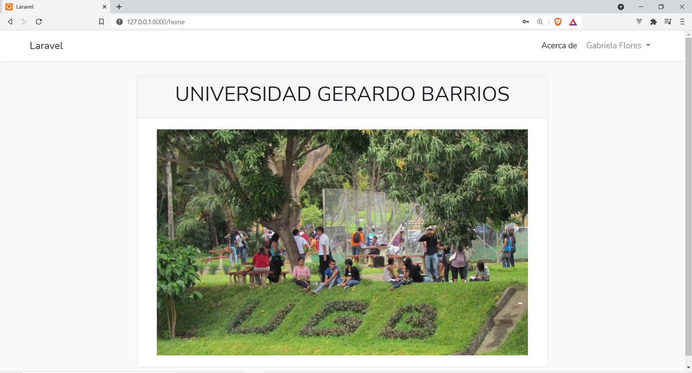
Parcial
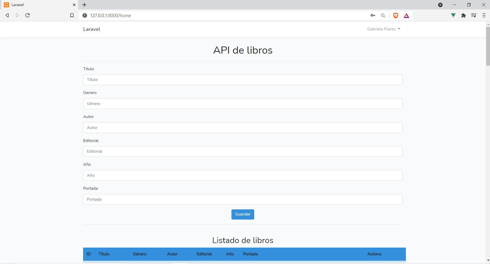 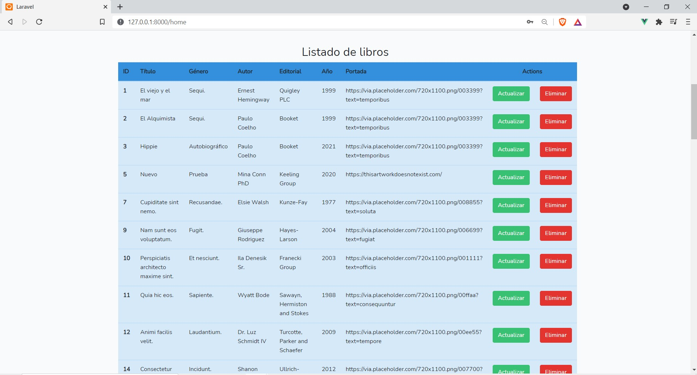
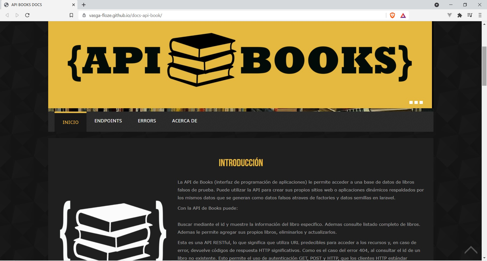
REPOSITORIOS DE GUIAS RESUELTAS
OTROS RECURSOS CONSULTADOS
Curso de introducción a laravel